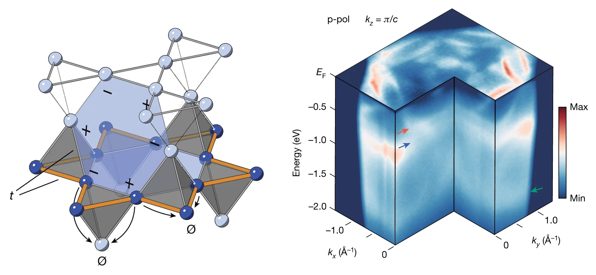

Flat-band and quantum-geometric materials
I study how lattice geometry and orbital connectivity can generate flat electronic bands, enhanced correlations, and unconventional metallic or superconducting behavior in real crystalline materials. This thrust connects graph-theoretic and materials-design ideas to experiments on kagome, pyrochlore, and other frustrated-lattice compounds, with the goal of identifying model platforms where band topology, quantum geometry, and interactions can be measured directly.
